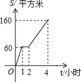
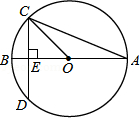
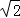
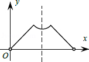
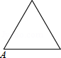
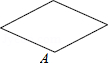
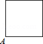
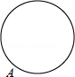

2014年北京市中考数学试题 · 选择题 第6、7、8题
6．（4分）（2014•北京）园林队在某公园进行绿化，中间休息了一段时间．已知绿化面积S（单位：平方米）与工作时间t（单位：小时）的函数关系的图象如图，则休息后园林队每小时绿化面积为（ ）

A． 40平方米 B． 50平方米 C． 80平方米 D． 100平方米
7．（4分）（2014•北京）如图，圆O的直径AB垂直于弦CD，垂足是E，∠A=22.5°，OC=4，CD的长为（ ）

A． 2

B． 4 C． 4 D． 88．（4分）（2014•北京）已知点A为某封闭图形边界上一定点，动点P从点A出发，沿其边界顺时针匀速运动一周．设点P运动的时间为x，线段AP的长为y．表示y与x的函数关系的图象大致如图，则该封闭图形可能是（ ）

A．

B． 
C． 
D． 